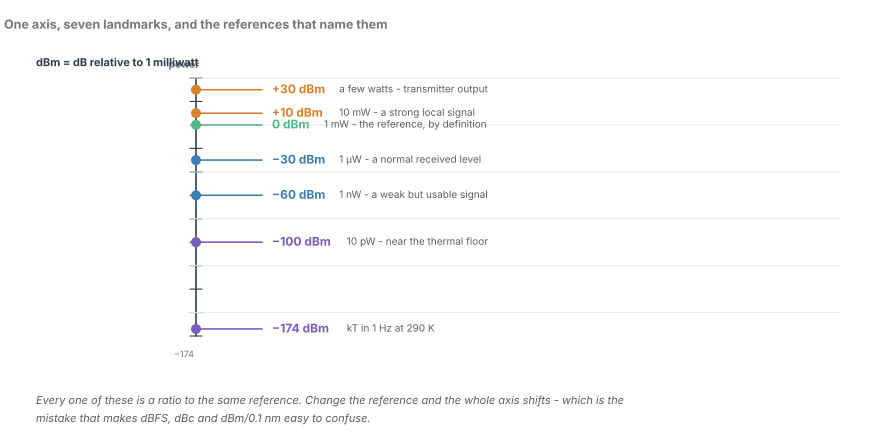
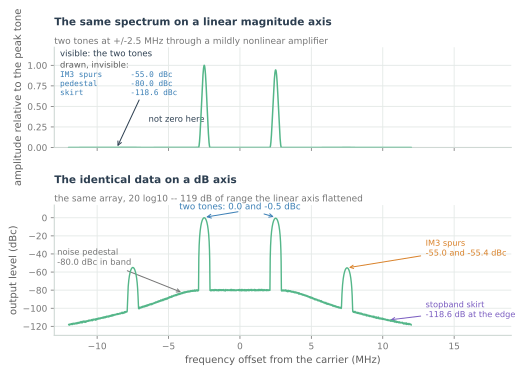
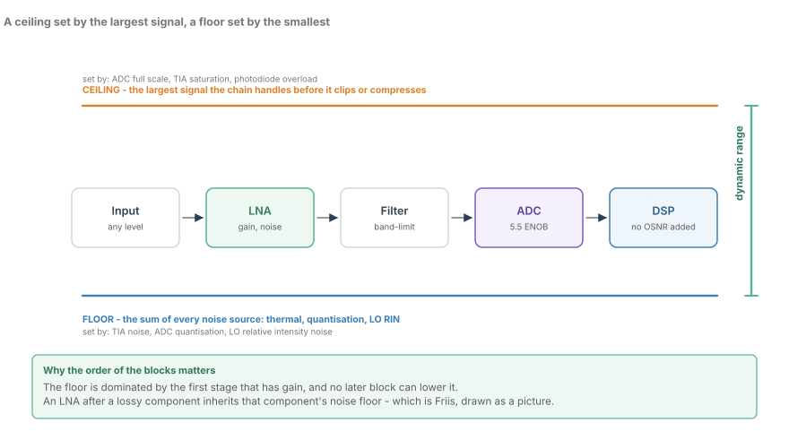
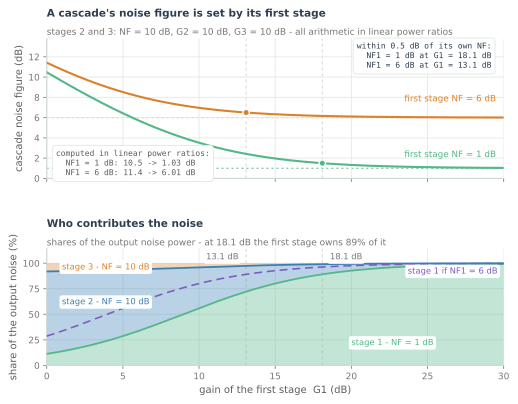
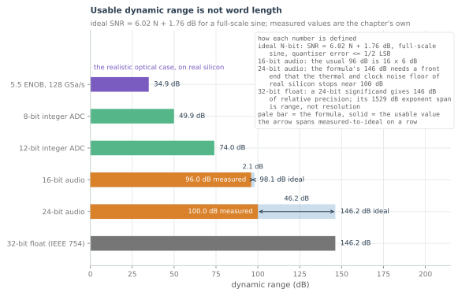

Decibels and Dynamic Range
Why engineers think in logs, the 3 dB and 6 dB rules you will use weekly, and how to keep dBm, dBW and dBFS straight.
Every number that decides whether a link works is a ratio, and every ratio in this field is quoted in decibels. Launch power, span loss, amplifier gain, noise figure, OSNR, FEC overhead: a link budget is a column of numbers you add and subtract, not one you multiply. That is why the log scale won.
This is the last chapter of the beginner part, and it is the payoff for the three before it. Sampling told you the converter's output is a copy of the spectrum; quantisation told you how many of those bits are real; this chapter gives you the language the rest of the course is argued in. There are exactly two places where the log scale does more than tidy the presentation. It changes which impairment you can see at all, and it turns a cascade of noisy stages into a problem about the first one.
If you cannot do decibel arithmetic in your head, every later chapter is a wall of numbers you are expected to take on faith. That is the first job.
A ratio pretending to be a unit
For two powers, and for two amplitudes:
The factor is 20 rather than 10 for a reason worth thirty seconds. Power goes as amplitude squared, so the power ratio is the square of the amplitude ratio, and $10\log_{10}(x^2) = 20\log_{10}x$. Squaring inside a logarithm is a factor of two outside it.
Which form you use is decided by what you measured. The 10 form covers optical power, electrical power and noise. The 20 form covers voltages, field amplitudes and the sample values that represent them. Applying the wrong one is a factor of two in the answer, which here looks like a plausible 3 dB — the most common arithmetic error in the field.

That ladder is the reference to redraw from memory. Read it in both directions and both columns: $+3$ dB doubles the power, $-3$ dB halves it, $+20$ dB is a hundred times, $+30$ dB is a thousand, and the amplitude column moves at twice that rate.
Addition is the operation: multiplying two ratios adds their decibels, dividing subtracts. Twenty decibels of gain then 3 dB of loss is 17 dB, and $100 \times 0.5 = 50$ is 17 dB. The arithmetic and the ratios agree by construction.
The references, and keeping them straight
Every dB figure in a specification carries a suffix, and the suffix is the entire meaning of the number.
| Unit | Referenced to | Where it turns up |
|---|---|---|
| dBm | 1 mW into 50 Ω | received optical power, launch power, photodiode input |
| dBW | 1 W | amplifier output, transmit power, high-power stages |
| dBFS | converter full scale | ADC and DAC levels, AGC setpoint, sample scaling |
| dBc | the carrier | image rejection, intermodulation products, spurs |
| dBc/Hz | the carrier, per hertz | laser phase noise, oscillator linewidth |
| dBi | an isotropic radiator | antenna gain, on the RF and testbench side |
The mW and W references are one conversion apart: 0 dBm is 1 mW and 30 dBm is 1 W, so 0 dBW and 30 dBm are the same power. A datasheet that mixes them is a factor of a thousand waiting to happen.
dBFS is the one that catches people out, because its sign convention runs the other way. Full scale is 0 dBFS, and every real signal sits below it at a negative number: $-3$ dBFS is half the power of a full-scale sine, $-60$ dBFS a thousandth of it, $-\infty$ silence. A larger dBm means more power; a larger dBFS means less headroom. Get the sign wrong and a 20 dB margin becomes a 20 dB deficit without the model complaining.
dBc and dBc/Hz are a ratio and a density. A spur at $-55$ dBc is 55 dB below the carrier, full stop. Phase noise in dBc/Hz is the power in a one-hertz sliver of spectrum, so it is a density: state the offset frequency, and integrate over a bandwidth before the number means anything.
dBi is antenna gain against a hypothetical isotropic radiator, so 3 dBi is a factor of two. It belongs to the RF side of the course, but the rule is unchanged: the suffix is the whole meaning.
The rules of thumb, made automatic
The ladder is the reference; these are the three facts that let you use it while somebody waits for an answer.
- 3 dB is a factor of two in power, 1.41 in amplitude — the smallest change that is never an accident.
- 10 dB is a factor of ten in power, 3.16 in amplitude.
- 6 dB is a factor of two in amplitude, and so a factor of four in power. The 20-form ladder runs at twice the rate.
Everything else is composition, because decibels add. Seven is 10 minus 3, so it is $10 \times 0.5 = 5\times$. Thirteen is $10 + 3 = 20\times$. Half a decibel is 12% in power and 6% in amplitude; one decibel is 26% and 12%.
| dB | Power ratio | Amplitude ratio |
|---|---|---|
| 0.5 | 1.12× | 1.06× |
| 1 | 1.26× | 1.12× |
| 3 | 2× | 1.41× |
| 6 | 4× | 2× |
| 7 | 5× | 2.24× |
| 10 | 10× | 3.16× |
| 20 | 100× | 10× |
| 30 | 1000× | 31.6× |
One decibel is usually noise in the argument; three decibels almost never is. One decibel is 26% in power — the size of the disagreement between two reasonable estimates of span loss, or of the connector you forgot. It is not worth a redesign. Three decibels is a factor of two, and a factor of two is not lost by accident: a link 3 dB short of margin does not degrade gracefully, it stops working. Argue about the 3 dB and write the 1 dB down.
What the log scale hides, and what it reveals

That figure plots one data set twice, changing only the axis. A third-order intermodulation product at $-55$ dBc is $10^{-55/10} \approx 3 \times 10^{-6}$ of the carrier in power, about 0.18% in amplitude. On the linear axis it is a flat line at zero, and not because the plot is coarse: it is genuinely three parts per million of the peak, and no linear axis drawn to show the peak can also show it.
On the decibel axis it sits unmistakably 55 dB down. That is the number you write in the specification and test against.
So the log scale puts the smallest numbers you care about onto the same picture as the largest. A link is judged on its margin, its spurs and its extinction ratio, and every one of those is a small fraction of a large number. Linear axes are for looking at the signal; log axes are for looking at what is wrong with it. An engineer who only ever plots linearly will miss the impairment that is killing the link.
Three habits protect you from what the log scale hides.
- Equal visual steps are equal ratios. Three decibels is a doubling at the top of the plot and at the bottom, so the eye cannot tell a 2 dB error on a 40 dB peak from one on a $-50$ dB spur.
- A log axis flatters curves. A quantity falling as $1/f$ is a straight line on log-log axes, which reads as well-behaved when it means unbounded growth towards DC.
- It hides how powers combine. Two uncorrelated equal powers add to $+3$ dB; two coherent equal amplitudes add to $+6$ dB.
Dynamic range, defined properly
Dynamic range is the ratio between the largest and smallest signal a system handles usefully:
Largest means the biggest signal before something compresses, clips or saturates — not the biggest the part survives. Smallest means the noise floor over the bandwidth you actually use, because a noise floor quoted without a bandwidth is not a number, and changing either qualifier changes the result.
SNR is the special case with one signal and one noise floor. Spurious-free dynamic range is the special case with two signals and a spur: how far the loudest intermodulation product sits below the fundamental in a two-tone test. Both are dynamic-range statements, they answer different questions, and a datasheet quotes whichever one is kinder.
Which is quoted tells you what the part is for. A wideband, noise-limited receiver is characterised by SNR, and therefore by ENOB. A narrowband system with a weak channel beside a strong one is characterised by SFDR, because it is a third-order product landing in band that stops you, not the noise floor. That is the previous chapter's argument for the coherent front end, where the neighbouring channel is always present: a converter sold as 12-bit can be worth 12 bits in the first case and 8 in the second.
A receiver's usable dynamic range is neither. It is SNR at the operating point: after AGC backoff, with the waveform's real peak-to-average ratio. That number is always the smallest of the three. Quote SNR for the link budget, quote SFDR when channels co-propagate, and never treat a datasheet's full-scale SNR as margin in hand.
Where the dynamic range comes from, and where it goes

That figure is a budget rather than a block diagram. The ceiling along the top is the largest signal that survives without compression, clipping or saturation, set by whichever stage gives up first — usually the converter's full scale or a photodiode's saturation. The floor along the bottom is every noise contributor in the chain, referred to one point. The space between them is the dynamic range.
The trick is to refer everything to the input. Divide each stage's output-referred noise by the gain in front of it and you get one number for how small an input signal is still detectable; divide the internal ceiling the same way and you get the largest input the chain accepts. Then four rules cover almost every case.
- Gain does not create dynamic range; it relocates it. A noiseless amplifier raises ceiling and floor together, and the ratio between them is unchanged.
- A real amplifier does cost range, because its own noise enters the sum at the input and the floor rises by roughly its noise figure.
- A better converter lowers the floor; more full-scale range raises the ceiling. Two different lines of one datasheet, and both show up here.
- A smaller ceiling is the silent killer. If a stage clips 6 dB earlier than the budget assumed, no resolution downstream brings those 6 dB back, because the information was never sampled.
That is why a receiver is designed from the front end outwards, not from the converter backwards.
Friis, and why dB arithmetic earns its keep
A receive chain is a cascade: detector, amplifier, filter, perhaps a mixer, converter. Every stage has a gain and every stage adds noise, and the question is what the combination does. Friis answered it in 1944, in linear ratios:
Here $F$ is the noise factor, the linear ratio $\mathrm{SNR}_{\mathrm{in}}/\mathrm{SNR}_{\mathrm{out}}$ for a matched source at 290 K, $G$ is the linear power gain, and $\mathrm{NF} = 10\log_{10}F$. This formula is why decibel arithmetic earns its keep in receiver design, and also why that arithmetic is dangerous.
Work an example. An LNA with 2 dB noise figure and 20 dB gain, then a stage at 10 dB and 10 dB, then a converter input at 20 dB. In linear ratios $F_1 = 1.58$, $G_1 = 100$, $F_2 = 10$, $G_2 = 10$, $F_3 = 100$, so
which is 2.48 dB. The two later stages cost half a decibel between them. That is the most liberating fact in analogue design: give the first stage low noise and enough gain, and then stop paying for the rest of the chain.
Now put a 3 dB attenuator in front of that amplifier — a connector, a splitter, a dirty patch panel. In linear ratios the pad is $F = 2$ with $G = 0.5$, so the same sum gives 5.49 dB against 2.48 dB without it. The pad is now the first term, undivided, and the amplifier's own 2 dB no longer buys what it did. Three decibels of loss in front of the amplifier costs three decibels of system noise figure — the whole loss, added once and never given back, because every later stage now sees a signal 3 dB weaker and a noise floor 3 dB higher.

That figure quantifies the other half of the lesson. Each 10 dB of first-stage gain divides the second stage's contribution by ten: at 0 dB of first-stage gain the second stage passes through untouched, and by 20 dB its linear excess contributes one per cent of itself, which leaves the curve within a fraction of a decibel of its asymptote. The asymptote is the first stage's own noise figure, and it is a hard floor. Whatever you spend after the front end, you cannot beat $\mathrm{NF}_1$.
The same cascade, three other places
The structure is not really about noise figure. It is about a ratio whose degradations add in the inverse, and three budgets in this field have that shape.
- Cascaded gain. Gain in decibels is a sum, with losses counted as negative gain. This is the one budget where the decibels genuinely add, and the one everyone remembers while forgetting that noise figure does not.
- Cascaded OSNR. Reciprocal OSNRs add, so for $N$ identical spans $\mathrm{OSNR}_N \approx \mathrm{OSNR}_{\mathrm{span}} - 10\log_{10}N$: 3 dB for the second span, about 1 dB for the fifth, less than half a decibel for the tenth. Same first-stage dominance, and the subject of the optical parts later in this course.
- Cascaded distortion. Third-order products add as amplitudes rather than powers, so two equal contributors give 6 dB and not 3.
Dynamic range is also a property of the number

The same two numbers — a ceiling and a floor — describe a number format, and that is the last thing the beginner part should leave you with.
A fixed-point format with $N$ bits, scaled so that full scale is a sinusoid, has $6.02N + 1.76$ dB of dynamic range: 49.9 dB at 8 bits, 74.0 at 12, 98.1 at 16. Range and resolution are the same quantity, bought one-for-one, because the step size is identical at both ends of the range.
Floating point separates them: a format is an exponent range and a significand, chosen independently. Single precision spends 8 bits on the exponent and 24 on the significand, so it spans about 1529 dB of range while resolving 146 dB at any one scale. That is the same format quoting two numbers a factor of ten apart, and only one of them is resolution.
The figure's own headline is the gap on the real formats: 16-bit audio reaches 96.0 dB against a 98.1 dB ideal, and 24-bit audio measures 100.0 dB against a 146.2 dB formula. The last 46 dB is not missing from the format — it is missing from the front end, because thermal and clock noise stop mattering below about 100 dB in silicon that has to run at speed. Word length and usable dynamic range are different numbers, and the datasheet quotes whichever is larger.
That decoupling is why the DSP in a coherent receiver is not one format. Samples move through a block-floating-point datapath with a shared scaling schedule, because the range needed to survive an unscaled FFT is far larger than the resolution needed to make a decision. Clipping at a peak is worse than giving away low-order bits, because clipping is a non-linearity, and a non-linearity manufactures spurs that no later averaging removes.
The mistake to avoid is assuming that a float has unlimited dynamic range. It has an enormous range and only 24 bits of resolution at each scale. A datasheet that says "single precision" has told you neither.
What to carry forward
- A decibel is a ratio and the suffix is the reference. Adding decibels multiplies ratios; subtracting divides them.
- 3 dB is 2× in power, 6 dB is 2× in amplitude, 10 dB is 10×, and 7 dB is 5× by composition. One decibel rarely matters; 3 dB almost always does.
- On a linear axis a $-55$ dBc spur is a flat line. The log axis is how you see what you are actually commissioning the link for.
- Dynamic range is ceiling over floor, in a stated bandwidth. SNR and SFDR are its two special cases.
- Friis is a sum of linear ratios divided by gains, not a sum of decibels. The first stage dominates, and 3 dB of loss in front of it costs 3 dB of noise figure.
- Floating point buys range, not resolution: single precision spans about 1529 dB of exponent range while resolving 146 dB.